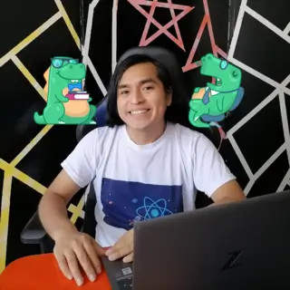
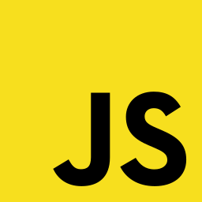
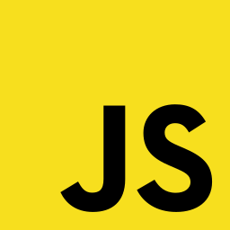
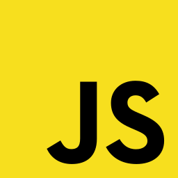

Base 2 by Web 4B Los mejores diseños y desarrollos de páginas web en el Perú Somos el mejor lugar donde puedes aprender sobre desarrollo web frontend. Asimismo, con Base 2 by Web 4B puedes hacer realidad ese sueño que tienes en mente. ¡Cambia tu vida! ¡Aprender gratis!  

 
